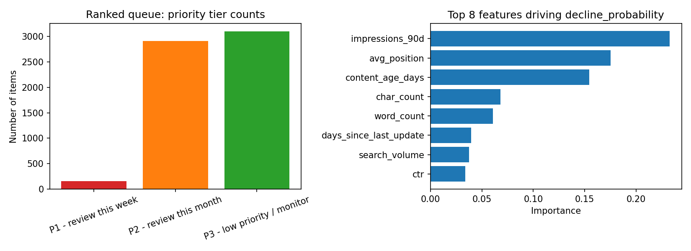

Abstract. This paper asks which content pages a team should prioritize for refresh, given a large catalog and limited review capacity. We built a Random Forest classifier trained on a client-grouped, leakage-checked split of FlyRank's warehouse data to flag pages likely to be declining in search performance. Under an honest, client-grouped validation split, the model reached a Precision@50 of 0.58 against a hand-written baseline rule's 0.38 — a measured improvement, not a guaranteed one. On the held-out test set the model produced 1,796 false positives and 812 false negatives out of 6,163 items, numbers that shape how the resulting queue should be used. We conclude with a three-tier ranked action playbook intended as a triage aid for human reviewers, not an automated decision system.
1. Introduction — The Question
Decision this work improves: which content pages to prioritize for refresh, out of a large catalog, when a team cannot manually review everything.
Who acts on it: content/SEO strategists who decide what to refresh, rewrite, or otherwise update.
Cost of a wrong call: a false positive wastes limited refresh effort on a page that wasn't actually declining. A false negative lets a genuinely declining page go unnoticed, continuing to lose visibility and traffic.
2. Data
This work uses the FlyRank ML Internship dataset (Pseudonymized Warehouse Release, v20260703), a star-schema warehouse of anonymized, hashed content-performance records. Two slices were used:
A 30,000-row anonymized content sample (44 columns) for baseline rule design and signal auditing.
A 9,841,378-row daily performance fact table slice (month = March 2026, 31 unique days) for the formal data contract and leakage audit.
Key fields:impressions_90d, avg_position, content_age_days, char_count, word_count, days_since_last_update, search_volume, ctr, and the target label is_declining_label (derived from an observed trend_direction == "down" flag).
Excluded, and why: the sealed June 2026 test-month file (fact_content_daily_performance_sample.parquet) was never touched while building features or tuning the label, preserving it as an unbiased future holdout. All identifiers used are hashed (client_hash_id, content_hash_id) — no raw client names, domains, or search queries were accessed in identifiable form, per the FlyRank Internship Data Use Terms.
3. Methodology
The task is framed as binary classification: predict whether a page is declining. Only same-day, decision-time features were used — none derived from the label window (trend_direction, trend_pct).
Baseline
A hand-written rule combining a staleness score and a normalized search-volume score (60/40 weighted), producing a ranked action queue. Baseline Precision@50 = 0.38 (naive split reference).
Model
A Random Forest classifier (n_estimators=300, max_depth=8) compared against Logistic Regression, trained on the same feature set and label.
Validation design
Data was split with GroupShuffleSplit by client, so no client's pages appear in both train and test — the honest, deployment-realistic split.
Leakage checks. A dedicated audit tested the split itself: a naive random split gave Precision@50 = 0.840, while the honest, client-grouped split gave 0.580 — a large gap showing part of the naive score was memorized client patterns, not real signal. A second test deliberately injected the true label as a feature: R² jumped from an honest 0.311 to a fake 1.0, confirming the leakage-detection process works. All reported results below use the honest, grouped, leakage-checked split.
4. Results (vs. Baseline)
Method
Precision@50
Precision (0.5 cutoff)
Recall (0.5 cutoff)
F1 (0.5 cutoff)
Baseline (rule)
0.38
—
—
—
Logistic Regression
0.60*
0.546
0.573
0.559
Random Forest
0.52*
0.565
0.742
0.642
*Note: these two Precision@50 figures came from an earlier, naive random-row split (Week 4/5 comparison). Re-run on the honest, client-grouped split, Logistic Regression's Precision@50 measured 0.580 versus the 0.38 baseline — the split-honest number to rely on.

Left: distribution of the ranked action queue across P1/P2/P3 review tiers. Right: top 8 features driving the Random Forest's decline_probability score.
Errors observed on the honest held-out test set (6,163 items): 1,796 false positives (flagged as declining but weren't) and 812 false negatives (missed a real decline). The three dominant features — impressions_90d, avg_position, and content_age_days — together explain most of the model's decisions: content losing visibility and ranking poorly as it ages carries the clearest measured signal of decline.
5. Limitations & Honest Framing
Scale: trained and tested on one anonymized dataset slice (30,000 rows, ~32 clients). Not validated on other content types, industries, or time windows.
What Precision@50 means: 0.58 means roughly 4 in 10 items in a top-50 pull are false alarms — this narrows attention, it does not replace human judgment on any single item.
Correlation, not causation: this is observational data with no controlled experiment. The model finds association, not proof that refreshing a page will improve its performance.
No time-series re-validation: performance has not been re-tested on a later time window to confirm it holds as content and behavior drift.
No fairness/bias audit was run across client segments or content categories.
The label is a proxy (an observed trend flag), not a verified ground-truth outcome.
6. Ranked Recommendations (Action Playbook)
Based on the model's honest, held-out scoring of 6,163 items:
P1 — Review this week (160 items). Highest decline_probability plus strong reason codes (stale content, low ranking, below-median impressions). A human reviewer must confirm each is not a false positive before any refresh action.
P2 — Review this month (2,906 items). Solid but lower-confidence signal; batch review monthly rather than urgent action.
P3 — Low priority / monitor (3,097 items). Weak or mixed signal; monitor for change next cycle rather than act now.
Human review is mandatory before any action — this is a triage aid, not an auto-action trigger. A second reviewer should sign off before P1 content is unpublished, merged, or majorly rewritten.
Never use this system to: auto-publish/auto-delete content without a human in the loop; make client-facing causal claims; score individual employees; or apply it to a client/content type outside the training distribution without re-validation.
Monitor for decay: re-run Precision@50 on a fresh sample monthly. A drop below 0.58, or a sudden jump in flag-rate, signals drift — investigate before trusting the queue. Retrain when the 90-day feature window rolls forward significantly or new clients/content types are added.